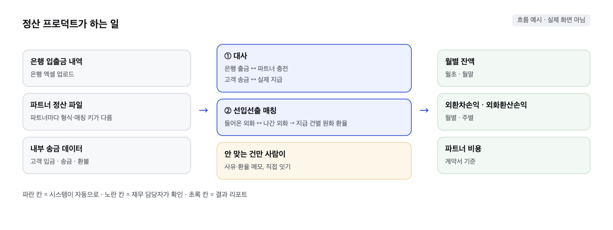

정산 프로덕트 기획·PM
재무팀이 손으로 맞추던 송금 정산을, 거래를 자동으로 짝짓고 안 맞는 건만 사람이 확인하는 사내 정산 프로덕트로 기획하고 주간 운영을 시작하는 데까지 이끌었습니다.

송금 한 건의 돈은 여러 번에 나눠 움직입니다
송금 한 건에는 고객의 원화 입금, 외화 매수, 해외 파트너 계좌 충전, 실제 지급이 시차를 두고 붙습니다. 파트너마다 정산 파일 형식과 거래를 잇는 키가 달라서, 어디서 금액이 어긋났는지 찾는 일에 재무팀 손이 많이 갔습니다. 재무팀 수작업을 줄이는 도구를 만드는 사내 TF에서 기획과 PM을 맡았습니다.
오차 건과 오차 금액부터
재무팀과 협의해 정한 첫 우선순위는 오차 건과 오차 금액을 먼저 골라내는 것이었습니다. 그래서 은행의 일 마감처럼 매일 거래를 정산해, 계산으로 나온 잔액과 마감 시각 실제 잔액의 차이를 표시하고 담당자가 다음 날 원인을 메모로 남기는 구조로 1차 기획안을 썼습니다. 기획안 맨 위에는 재무팀 일을 줄이고 오류를 더 정확히 잡는 데 도움이 안 되면 바로 갈아엎겠다고 적고, 피드백을 받으며 다듬었습니다. 은행 입출금 내역을 받는 방법은 세 가지를 비교했습니다.
| 방법 | 장점 | 단점 |
|---|---|---|
| 은행 엑셀 업로드 | 빠지는 건이 없음 | 사람 손이 조금 듦 |
| 입출금 문자 자동 수집 | 자동 | 법인 폰 상태에 따라 빠질 수 있음 |
| 은행 API 연결 | 빠지는 건이 없음 | 사람·개발 자원이 많이 듦 |
누락이 없는 엑셀 업로드로 시작했습니다. 나중에 회계 ERP로 내역을 자동으로 받아 오는 방법도 은행마다 연결이 되는지 확인해 정리했지만, 최종적으로는 업로드 방식으로 갔습니다.
파트너마다 다른 정산을 한 모델로
파트너마다 충전·환전·수수료가 붙는 방식과, 내부 송금과 파트너 거래를 잇는 키가 달랐습니다. 이걸 파트너별 정산 구조 자료로 만들고, 개발자들과 파트너별로 여러 차례 '충전부터 외환차손익까지 어떤 데이터로 어떻게 계산하는지' 세션을 열었습니다. 충전·지급·이월 같은 말은 용어 사전으로 정리했습니다. 목표는 다섯 가지로 정리했습니다.
- 은행에서 나간 돈과 파트너 계좌에 들어온 돈을 맞춥니다. 안 맞는 건에는 사유를 적습니다.
- 고객이 보낸 송금과 실제 지급을 맞춥니다. 여기도 안 맞는 건에는 사유를 적습니다.
- 들어온 외화와 나간 외화를 선입선출로 짝지어, 지급 건마다 원화 기준 환율을 계산합니다.
- 그 환율로 외환차손익을 계산합니다.
- 월말에 남은 외화로 외화환산손익을 계산합니다.
사람이 할 일과 시스템이 할 일을 나눴습니다
| 시스템이 자동으로 | 사람이 직접 |
|---|---|
| 한 달치 들어온 돈과 나간 돈을 선입선출로 짝짓기 | 환율이 정해지지 않은 기타 입금의 사유·환율 적기 |
| 남거나 모자란 금액을 다음 달로 이월하기 | 자동으로 안 짝지어진 지급·환불 건 찾아 잇기 |
| 짝지은 결과로 외환차손익·비용 계산 | 결과 검수와 예외 메모 |
결과 리포트는 월간(잔액, 외환차손익, 외화환산손익, 파트너 비용)과 주간(외환차손익, 파트너 비용)으로 나눠 정리했습니다.
운영에 올리기까지
개발 막바지에는 스크럼 요약을 남기며 남은 일을 챙겼고, 재무 담당자가 직접 적어야 하는 거래는 주차별 정답 파일과 작성 기준을 만들어 넘겼습니다. 담당자들이 권한을 받도록 챙기고, 매주 파트너 데이터를 올리는 흐름을 시연한 뒤 주간 운영을 시작했습니다. 이후 PM 역할은 다른 분께 넘겼습니다.
하면서 부딪힌 것
- 문의한 은행은 송금인 계좌번호를 주지 않았습니다. 개인정보라서 법적 사유 없이는 제공하지 않는다는 답이었습니다. 그래서 입금과 송금을 계좌번호 없이 이을 방법이 필요했습니다.
- 정산 방식이 바뀌면 시스템도 같이 바뀌어야 했습니다. 파트너와의 정산 방식이 달라질 수 있다는 걸 알게 됐을 때, 시스템을 만들기 전에 사업 쪽에 먼저 확인을 부탁했습니다.
※ 사내 기밀 보호를 위해 수치는 비율·배수 같은 상대 표현만 썼습니다.